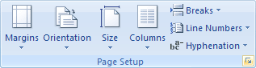
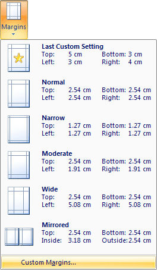
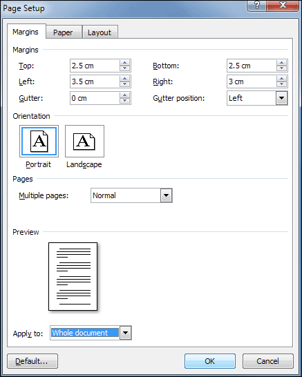
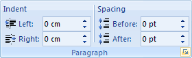
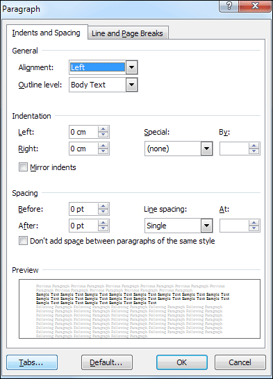
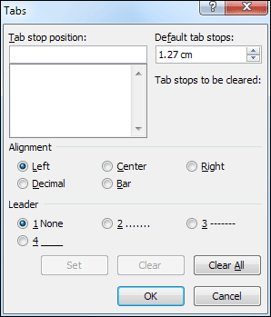

Free
computer Tutorials
|
Free
computer Tutorials
|
|
 home home |
|
|||||
Microsoft Word 2007 to 2010Setting up Page Margins and Tab StopsBefore we insert the text file that you download in the previous lesson, we can set up our margins and tabs. To set the margins for the entire document, do the following:
 You can also click the Margins item, and then Custom Margins from the menu that appears:  The Margins dialogue box will appear, and look like this:  The values to set are these: Top: 2.5 cm (1 inch) When you're done, click OK. You will be returned to your blank page with the new margins set. We're going to set up a Tab Stop for the first line of each paragraph. We can then indent by pressing the Tab key on the keyboard. To set a Tab stop, do the following:
 This will bring up the Indents and Spacing dialogue box, which you've met before. (You brought up this dialogue box from the Paragraph panel on the Home ribbon, previously. But it's the same one.)  Click the Tabs button in the bottom left to bring up the Tabs dialogue box:  We're going to change the Default tab stop. A default is a number that is built into the programme. If you look at the top right of the Tabs dialogue box you'll see the figure of 1.27 cm for the "Default tab stops" (or the equivalent in inches). This default number will be the same for everybody with the same version of Microsoft Word. You can, of course, change it. But what you are changing here is the size of the jump that the cursor makes when you press the Tab key on your keyboard. So with the cursor blinking on the first line, when you press the tab key, your cursor will jump 1.27 centimetres.
All right, time to insert the text file. We'll do that in the next
lesson below. How to Insert a Text File into a Word Document --> <--Back to the Word Contents Page View all our Home Study Computer Courses
|
||||||
|